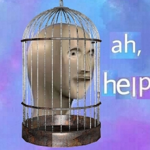

ScoutFoulque
Il y a 3 mois
Rodez est une ville charmante avec une atmosphère historique captivante et des habitants chaleureux. J'ai particulièrement apprécié la visite du Musée Soulages. Cependant, l'offre gastronomique pourrait être plus diversifiée.
Nereus
Il y a 3 mois
Rodez est une ville pleine de charme et d'histoire, avec une population accueillante. J'ai adoré explorer ses rues pavées et visiter des joyaux culturels comme le Musée Soulages. Si vous recherchez une escapade authentique, c'est l'endroit idéal.
Ryuk137
Il y a 3 mois
Mon séjour à Rodez a été marqué par la découverte de son riche patrimoine historique et culturel. La ville offre une atmosphère chaleureuse et authentique, et j'ai été impressionné par la beauté de la cathédrale Notre-Dame.

Hisi_122
Il y a 3 mois
La cathédrale Notre-Dame de Rodez est un chef-d'œuvre architectural. Une visite incontournable pour les amateurs d'histoire et d'art.

AlphaNoe
Il y a 3 mois
Les habitants de Rodez sont incroyablement accueillants et chaleureux. J'ai été agréablement surpris par la convivialité de cette ville.